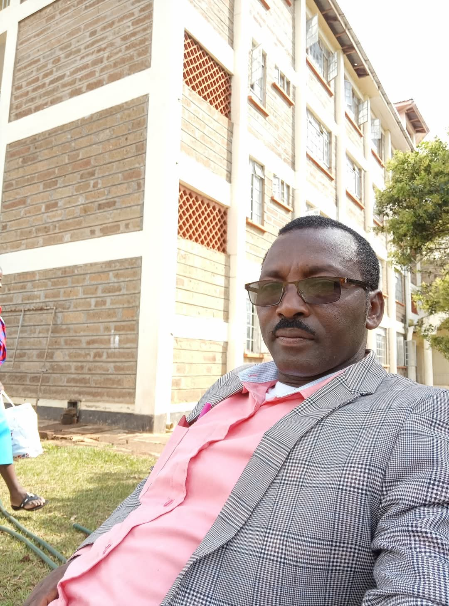

Home
Welcome to the FREDS Grammar Alumni website! Stay connected, celebrate memories, and stay informed about our vibrant community of former students.
This platform is designed to bring together former students of Freds Grammar School. Here, you can reconnect with classmates, share updates, plan reunions, and support each other both professionally and personally.
About
Learn more about our alumni association, our history, and our mission to keep the spirit of FREDS Grammar alive.
Our Founder
Freds Grammar Adventist Secondary School was founded by Mr. Fred Mwangi Muriuki, fondly known as "Mr.". He is a dedicated teacher by profession, a loving husband to Peris Ngure (also known as "Mrs"), and a proud father of three children: Rose, Nancy, and Jose.
The school's journey began in 2016, and the first class to sit for the Kenya Certificate of Secondary Education (KCSE) was the Class of 2017. However, the first group to go through all four years of high school at Freds Grammar was the Class of 2019.
Our Graduating Classes
- 🎓 Class of 2017 (Pioneer Class)
- 🎓 Class of 2018
- 🎓 Class of 2019
- 🎓 Class of 2020
- 🎓 Class of 2021
- 🎓 Class of 2022
- 🎓 Class of 2023
Gallery
Explore photos from our events and gatherings. Relive the memories and see how we continue to make new ones.


Events
Stay updated on upcoming events and reunions. Don't miss out on the chance to reconnect with old friends.
In memory of STEPHEN WAIGWA.Date: August 5, 2024